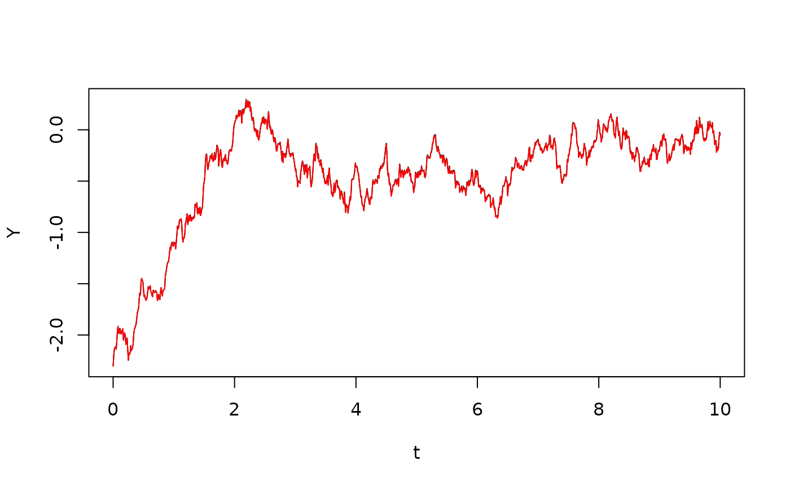

Verifying Itô’s formula through simulation
Itô’s formula states that \[ dY_t = h'(X_t) ~dX_t + \frac 12 h''(X_t) (dX_t)^2 \] when \(\{X_t\}\) is an Itô process and \(Y_t=h(X_t)\).
Moreover, if \[ dX_t = F_t ~dt + G_t ~dB_t \] then we have \((dX_t)^2 = G_t^2 ~dt\), so \[ dY_t = h'(X_t) F_t ~dt + h'(X_t) G_t ~dB_t + \frac 12 h''(X_t) G_t^2 ~dt \]
The following verifies this numerically for a specific example, where \(\{X_t\}\) is stochastic logistic growth:
## Loading required package: SDEtools
f <- function(x) x*(1-x)
g <- function(x) 0.5*x
t <- seq(0,10,0.01)
B <- rBM(t)
x0 <- 0.1
X <- euler(f,g,t,x0,B)$X
plot(t,X,type="l")We now map this process through the function \(h(x)=\log x\) to generate \(Y_t=h(X_t)\):
We now verify the first variant of Itô’s formula:
plot(t,Y,type="l")
Y1 <- h(x0) + itointegral(hp(X),X) + 0.5*itointegral(hpp(X),QuadraticVariation(X))
lines(t,Y1,col="red")
There is some discretization error, because we are effectively truncating at second order in Taylor’s formula when computing increments over each time step.
plot(t,Y-Y1,type="l")We now do the same for the second formulation:
plot(t,Y,type="l")
Y2 <- h(x0) + itointegral(hp(X),X) + 0.5*itointegral(hpp(X)*g(X)^2,t)
lines(t,Y2,col="green")In this discretization error, there is now also the effect that the discretized quadratic variation of Brownian motion does not exactly equal time. This error turns out to be larger, in this case:
plot(t,Y-Y2,type="l")